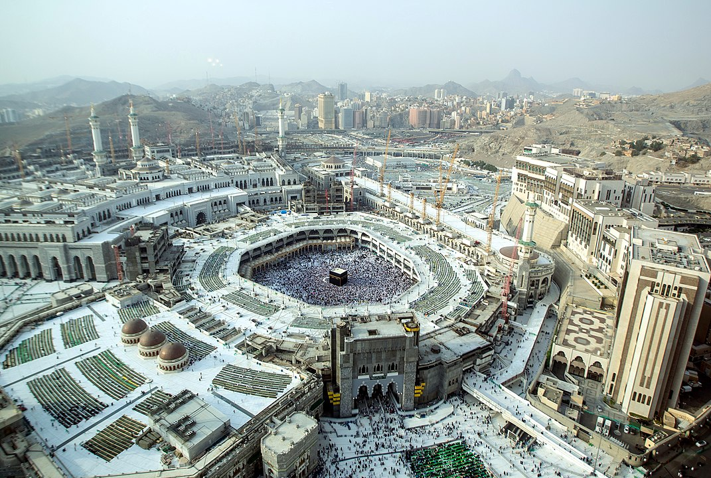
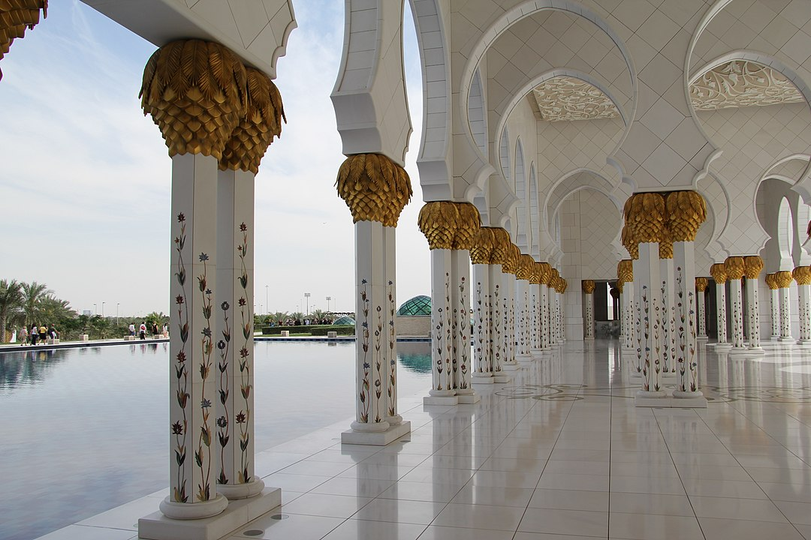
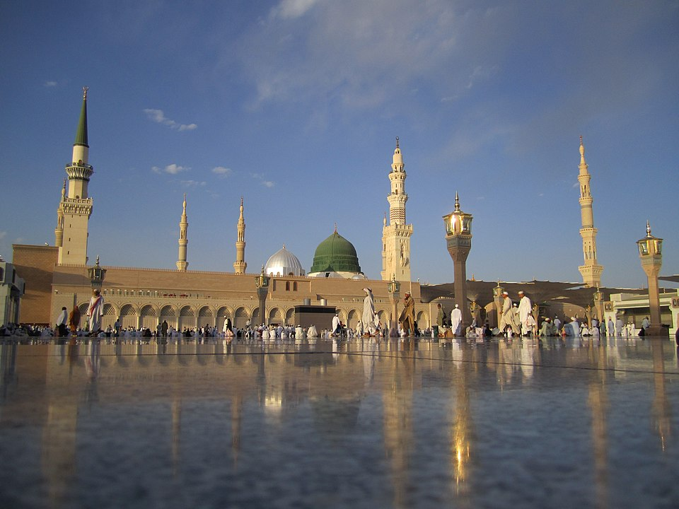
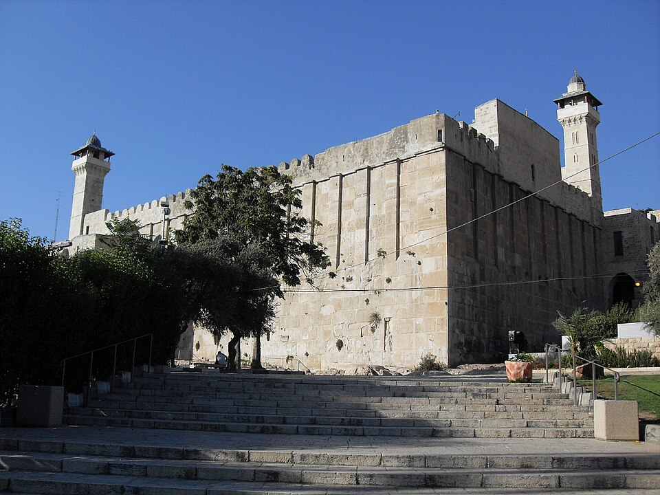
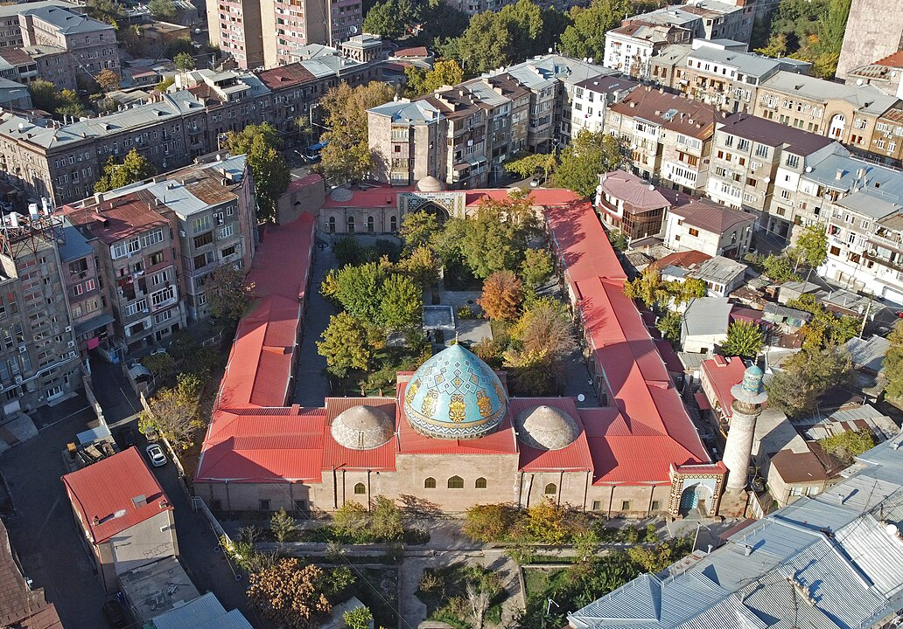
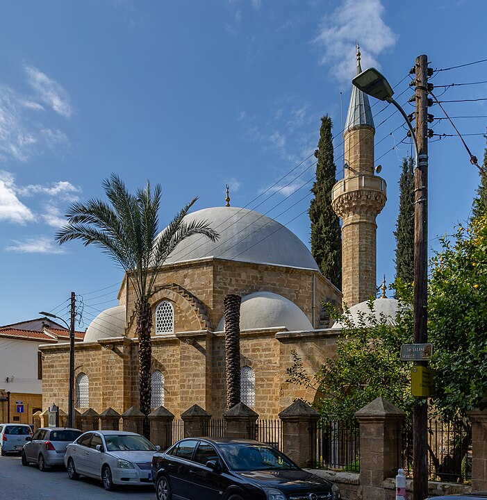
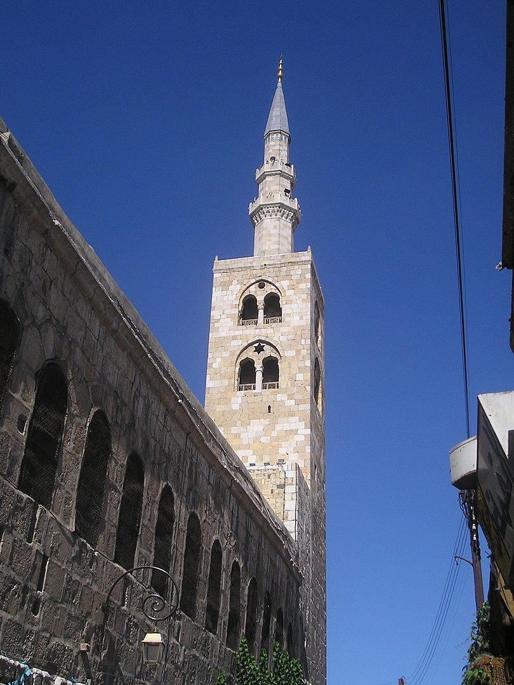
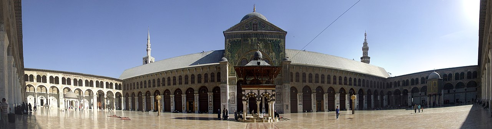
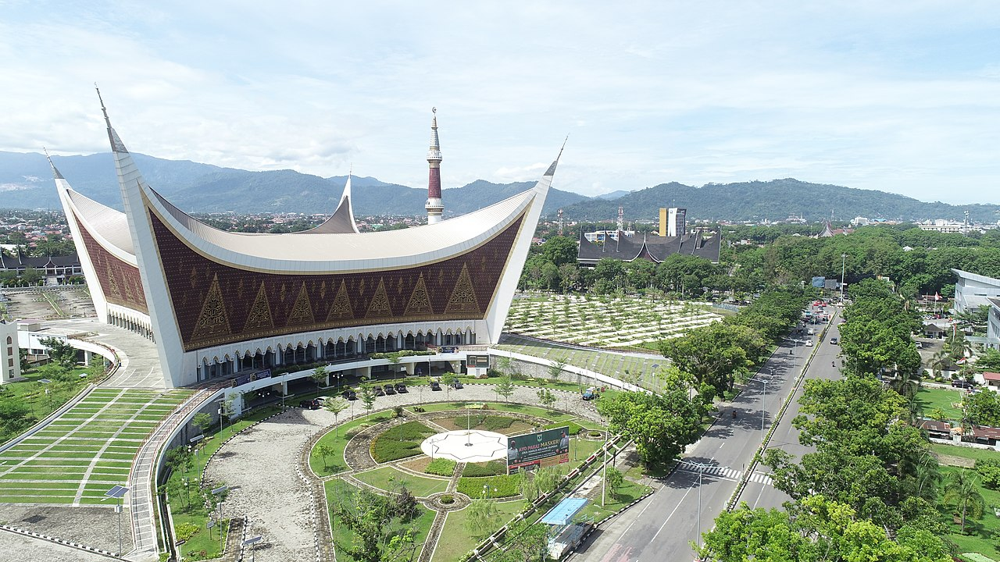
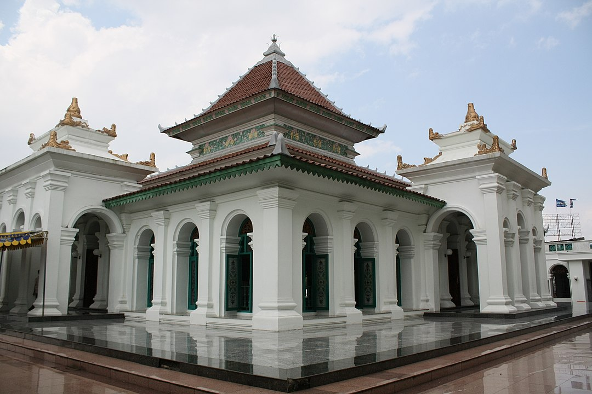

В исламе мечетью называется здание или место, предназначенное для коллективного поклонения Аллаху. Мечеть служит для совершения ежедневных молитв (намаз), пятничной коллективной молитвы (джума), а также для чтения Корана, религиозного образования и других духовных и общественных мероприятий. Мечети могут варьироваться по размеру и архитектуре, но все они имеют одно общее — это место, где мусульмане собираются для поклонения и укрепления своей веры.

Мечеть аль-Харам
Функции мечети
Мечеть выполняет множество важных функций в жизни мусульманской общины:
Место поклонения: Основная функция мечети — это место для совершения молитв (намаз). Мусульмане собираются здесь для выполнения пяти ежедневных молитв, а также пятничной молитвы (джума).
Образовательный центр: Мечети часто служат местами для религиозного образования. Здесь проводятся уроки по изучению Корана, хадисов и основ ислама. Также могут быть организованы занятия для детей и взрослых.
Социальный центр: Мечети играют важную роль в социальной жизни мусульманской общины. Здесь проводятся различные мероприятия, включая свадьбы, похороны и другие важные события. Мечеть может также служить местом для сбора и распределения благотворительной помощи.
Место для размышлений и духовного роста: Мусульмане могут приходить в мечеть для уединенных молитв, медитации и размышлений. Мечеть предоставляет спокойное и священное пространство для духовного роста.
Центр общинной жизни: Мечети часто являются местами, где община собирается для обсуждения важных вопросов, проведения собраний и принятия коллективных решений.
Место для праздников: В мечетях проводятся торжества по случаю религиозных праздников, таких как Ид аль-Фитр (праздник разговения после Рамадана) и Ид аль-Адха (праздник жертвоприношения).

Мечеть шейха Заида
Элементы мечети
Архитектурные и функциональные элементы мечети помогают верующим правильно выполнять религиозные обряды и находить духовное утешение. Рассмотрим основные составляющие элементы мечети, которые формируют её уникальную структуру и атмосферу, способствующую молитве и размышлениям.
Часть храма
Описание
Минбар
Возвышение или кафедра, с которой имам произносит проповедь (хутбу).
Михраб
Ниша в стене мечети, указывающая направление киблы (направление на Мекку).
Минарет
Башня, с которой муэдзин призывает верующих на молитву.
Сахн
Внутренний двор мечети, часто окружённый аркадами.
Кибла
Направление на Мекку, к которому обращены все молитвы.
Купол
Архитектурный элемент, часто украшающий центральную часть мечети.
Мусалла
Место для совершения молитвы, обычно в центральной части мечети.
Зона для омовения (вуду)
Место, где верующие совершают ритуальное омовение перед молитвой.
Медресе
Учебное заведение при мечети, где изучаются исламские науки.
Махфиль
Балкон или галерея, часто используемая для женской части общины.
Худжра
Комната или помещение для хранения религиозных книг и предметов.
Рияд
Сад или зелёная зона, иногда расположенная рядом с мечетью.
Библиотека
Помещение для хранения и изучения религиозных текстов и литературы.
Купольный зал
Центральное пространство под куполом, часто служащее основным местом для молитвы.

Масджид ан-Набави
Формы мечети
Мечети могут иметь различные формы и архитектурные стили в зависимости от региона, времени постройки и культурных традиций. Вот некоторые из наиболее распространенных форм и архитектурных элементов мечетей:
Квадратные и прямоугольные: Многие традиционные мечети имеют квадратные или прямоугольные планы. Это позволяет создать просторные молитвенные залы, в которых может разместиться большое количество верующих.

Пещера Патриархов
Купольные: Купола являются одной из самых узнаваемых архитектурных особенностей мечетей. Купола могут быть различных размеров и форм, от простых полусфер до сложных многоуровневых конструкций.

Пещера Патриархов
Многоугольные: Некоторые мечети имеют многоугольные планы, что придает им уникальный внешний вид. Такие формы могут быть особенно популярны в архитектуре османского периода.

Арабахмет
С минаретами: Минареты — высокие башни, из которых муэдзин призывает к молитве. Минареты могут быть одиночными или множественными, круглыми или квадратными в сечении, и часто являются важным архитектурным элементом мечети.

Один из минаретов мечети Омейядов
С внутренними дворами: В некоторых мечетях, особенно в странах с теплым климатом, есть внутренние дворы (сахн), окруженные аркадами. Эти дворы могут служить местом для омовения и дополнительной молитвенной площадкой.

Внутренний двор мечети Омейядов
Модернистские: Современные мечети могут иметь разнообразные и инновационные формы, включая использование стекла, стали и других современных материалов. Архитекторы могут создавать уникальные и креативные проекты, сохраняя при этом основные функциональные требования мечети.

Великая Мечеть в Западной Суматре
Традиционные региональные стили: В разных регионах мира мечети могут отражать местные архитектурные традиции. Например, мечети в арабских странах могут иметь простые и строгие линии, тогда как мечети в Турции часто украшены сложной плиткой и орнаментами.

Великая Мечеть в Палембанге
Архитектура мечетей прошла через значительные изменения с момента зарождения ислама в VII веке:
История исламской архитектуры
Ранний период (VII-X века)
Простота и функциональность: В ранний период, первые мечети, такие как Мечеть Пророка в Медине, были простыми структурами. Эти здания предназначались для собраний и молитв, имели открытые дворы и крытые области, защищающие верующих от палящего солнца.
Арабская архитектура: В это время мечети строились с использованием местных строительных материалов и техник. Они были довольно простыми, отражая функциональные потребности и местные традиции.
Средневековый период (X-XV века)
Усиление декора: В средневековый период архитектура мечетей стала более сложной и декоративной. Появились такие элементы, как купола, минареты и михрабы (ниши, указывающие на направление Мекки), которые добавляли эстетическую и символическую ценность.
Персидское влияние: В это время многие мечети начали использовать элементы персидской архитектуры. Айваны (высокие сводчатые залы) и сложные мозаики стали характерными чертами, придавая зданиям уникальный и изысканный вид.
Османский стиль: В Османской империи, особенно в XV-XVI веках, мечети, такие как Сулеймание и Султанахмет (Голубая мечеть), стали известны своими большими куполами и элегантными минаретами. Эти сооружения отражали мощь и величие империи, становясь символами её культурного наследия.
Ренессанс и барокко (XVII-XVIII века)
Сложные формы и орнаменты: В эпоху Ренессанса и барокко архитектура мечетей стала еще более сложной и детализированной. Использование барочных и ренессансных элементов привело к созданию изысканных и художественно богатых зданий.
Синтез стилей: В этот период мечети начали сочетать элементы различных архитектурных стилей. Это привело к созданию уникальных и разнообразных дизайнов, отражающих культурное многообразие и инновации того времени.
Современный период (XIX-XXI века)
Модернизм: В XX веке архитекторы начали использовать современные материалы и технологии, такие как сталь и бетон. Это позволило создавать более смелые и инновационные конструкции, которые отличались от традиционных форм и стилей.
Функциональность и эстетика: Современные мечети, такие как Мечеть Фейсала в Пакистане и Мечеть Хасана II в Марокко, сочетают в себе функциональность и эстетическую привлекательность. Эти здания являются символами современного исламского искусства и архитектуры, отражая стремление к гармонии и инновациям.